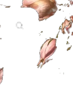

01 / NATURALنچرال امضایی

تارهای ظریف و فضای باز برای نتیجهای سبک و طبیعی.

میکروبلیدینگ ظریف، طراحی دقیق، حس لوکس
از فرم صورت و جهت رشد تارها تا انتخاب سبک و مراقبت بعد از کار، همهچیز با دقت بررسی میشود تا نتیجه طبیعی، مرتب و مخصوص خودت باشد.

 SON GOOL SIGNATURE
SON GOOL SIGNATURE
هر اجرای خوب از شناخت چهره شروع میشود. فرم ابرو، فاصله چشمها، قوس طبیعی، تراکم تارها، نوع پوست و سابقهی کارهای قبلی، همگی روی طراحی نهایی اثر دارند.
هدف این است که بعد از کار، ابرو بخشی از چهره به نظر برسد؛ نه یک عنصر جدا و سنگین. خطوط باید ظریف و کنترلشده باشند و در کنار فرم طبیعی صورت بنشینند.
دستهی وسط را روی هر تصویر بکش. برای شفافیت، سمت «قبل» در این نسخه یک شبیهسازی آموزشی از همان مرجع تصویری است و نمونهی واقعی قبل/بعد محسوب نمیشود.
تارهای ظریف و فضای باز برای نتیجهای سبک و طبیعی.

چیدمان رو به بالا با حس براشخورده و سبک.

جزئیات تار در کنار سایهی ملایم برای عمق بصری متعادل.
این گالری برای مقایسهی استایلهاست. هر تصویر را میتوان باز کرد، ذخیره کرد و هنگام مشاوره بهعنوان مرجع سلیقه نشان داد.
میکروبلیدینگ روشی برای ایجاد خطوط ظریف شبیه تار مو در ناحیهی ابروست. کیفیت نتیجه فقط به اجرای خطوط محدود نیست؛ طراحی، تناژ، نوع پوست، پایهی طبیعی ابرو و مراقبت بعد از کار هم در ظاهر نهایی نقش دارند.
چون ابرو بخشی از قاب صورت است. ابتدا فرم کلی، قوس، طول، ضخامت و جهت تارها بررسی میشود و بعد تکنیک متناسب با آن انتخاب میشود.
بافت، میزان چربی و رفتار پوست میتواند روی ماندگاری ظاهری خطوط و انتخاب شدت کار اثر بگذارد. به همین دلیل یک نسخهی ثابت برای همه وجود ندارد.
نچرال برای حس مینیمال، کرکی برای بافت رو به بالا، ترکیبی برای تار + سایه و پودری برای هالهی نرمتر و مرتبتر.
ظاهر روز اول نتیجهی نهایی نیست. پوست در روند ترمیم تغییر میکند و رنگ نیز میتواند در روزهای بعد ملایمتر دیده شود.
دستکاری، اصطکاک، محصولات نامناسب یا بیتوجهی به دستور متخصص میتواند روند ترمیم را مختل کند. مراقبت بخشی از فرایند است، نه یک مرحلهی فرعی.
برای شروع میتوانی یک سبک را انتخاب کنی، اما فرم نهایی همیشه با توجه به چهره و پایهی طبیعی ابرو شخصیسازی میشود.
تارهای ظریف و فضای باز برای یک حس کاملاً طبیعی.
NATURALتارهای رو به بالا و بافت سبک برای ابروی airy.
FLUFFYتار + سایه برای تعادل بین بافت و عمق.
COMBOهالهی نرم برای قاب مرتبتر و آرایشپذیرتر.
POWDERناحیه را دقیقاً طبق دستور متخصص تمیز و خشک نگه دار.
پوستهها را جدا نکن و اجازه بده روند ترمیم طبیعی پیش برود.
در روزهای اول از فشار، اصطکاک و محصولات نامناسب روی ناحیه دوری کن.
برای ارزیابی نهایی، زمان پیشنهادی متخصص را در نظر بگیر.
انتخاب درست، توضیح شفاف، مراقبت منظم و صبر برای طی شدن روند ترمیم، کنار هم نتیجهی حرفهایتری میسازند.
SON GOOL HAMEDاین فرم بدون سرویس خارجی کار میکند. برای نسخهی فعلی، اطلاعات درخواست فقط در همین مرورگر ذخیره میشود و میتوانی متن درخواست را کپی یا با قابلیت اشتراکگذاری گوشی ارسال کنی.
انتخاب تکنیک به شرایط پوست، پایهی ابرو، سابقهی کارهای قبلی و سبک دلخواه بستگی دارد و بهتر است پیش از اجرا بررسی شود.
رنگ و فرم قبلی باید دیده شود. بسته به وضعیت موجود ممکن است تکنیک مناسب متفاوت باشد یا ابتدا نیاز به بررسی و اصلاح وجود داشته باشد.
خیر. ظاهر اولیه با نتیجهی ترمیمشده یکی نیست و رنگ و بافت ابرو میتواند در روزهای بعد تغییر کند.
چند مرجع را ذخیره کن و در مشاوره نشان بده. در نهایت فرم چهره و پایهی طبیعی ابرو روی انتخاب نهایی اثر میگذارند.